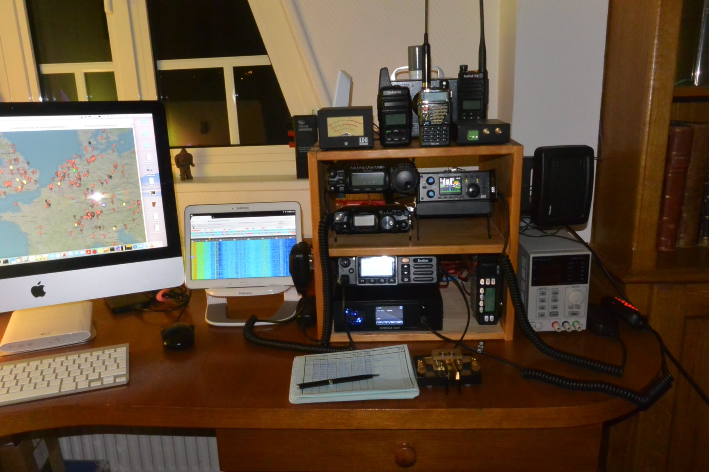

<article>

<section class="station">

<h2>Ma station actuelle</h2>

<p>
Aujourd'hui, ma station reste volontairement simple. J'apprécie autant le matériel ancien que les équipements récents selon le type d'expérimentation que je souhaite mener. Je privilégie les équipements fiables, facilement transportables et offrant de bonnes possibilités d'expérimentation aussi bien en HF qu'en VHF/UHF ou en numérique.
</p>

<figure class="station-photo">

    

    <figcaption>
        Vue générale de la station F6CYK à Etretat (2014-2023).
    </figcaption>

</figure>

<div class="station-grid">

<div class="station-column">

<div class="station-card">
<h3>HF</h3>
<ul>
<li>Yaesu FT-857</li>
<li>Yaesu FT-817ND</li>
<li>Xiegu G90</li>
<li>Elecraft KH1</li>
</ul>
</div>

<div class="station-card">
<h3>VHF / UHF</h3>
<ul>
<li>Belcom LS-202</li>
<li>Icom IC-202</li>
<li>Leixen LX-898</li>
</ul>
</div>

<div class="station-card">
<h3>Portatifs</h3>
<ul>
<li>Baofeng UV-3R</li>
<li>Wouxun KG-UV8D</li>
<li>Radioddity GD-77</li>
<li>Radioddity GD73</li>
<li>Quansheng UV-K5</li>
</ul>
</div>

</div>

<div class="station-column">

<div class="station-card">
<h3>Numérique</h3>
<ul>
<li>DVMEGA Cast</li>
<li>Inrico TM7 Plus</li>
<li>Spotnik Hotspot</li>
<li>MMDVM + Raspberry Pi Zero</li>
</ul>
</div>

<div class="station-card">
<h3>Antennes</h3>
<ul>
<li>Miracle Antenna (homebrew)</li>
<li>MagLoop</li>
</ul>
</div>

<div class="station-card">
<h3>Mesures</h3>
<ul>
<li>MFJ-269 Antenna Analyzer</li>
<li>Heathkit HD-1250 Dip Meter</li>
<li>NanoVNA</li>
<li>Oscilloscope</li>
<li>Multimètre</li>
</ul>
</div>

</div>

</div>

</section>

</article>
